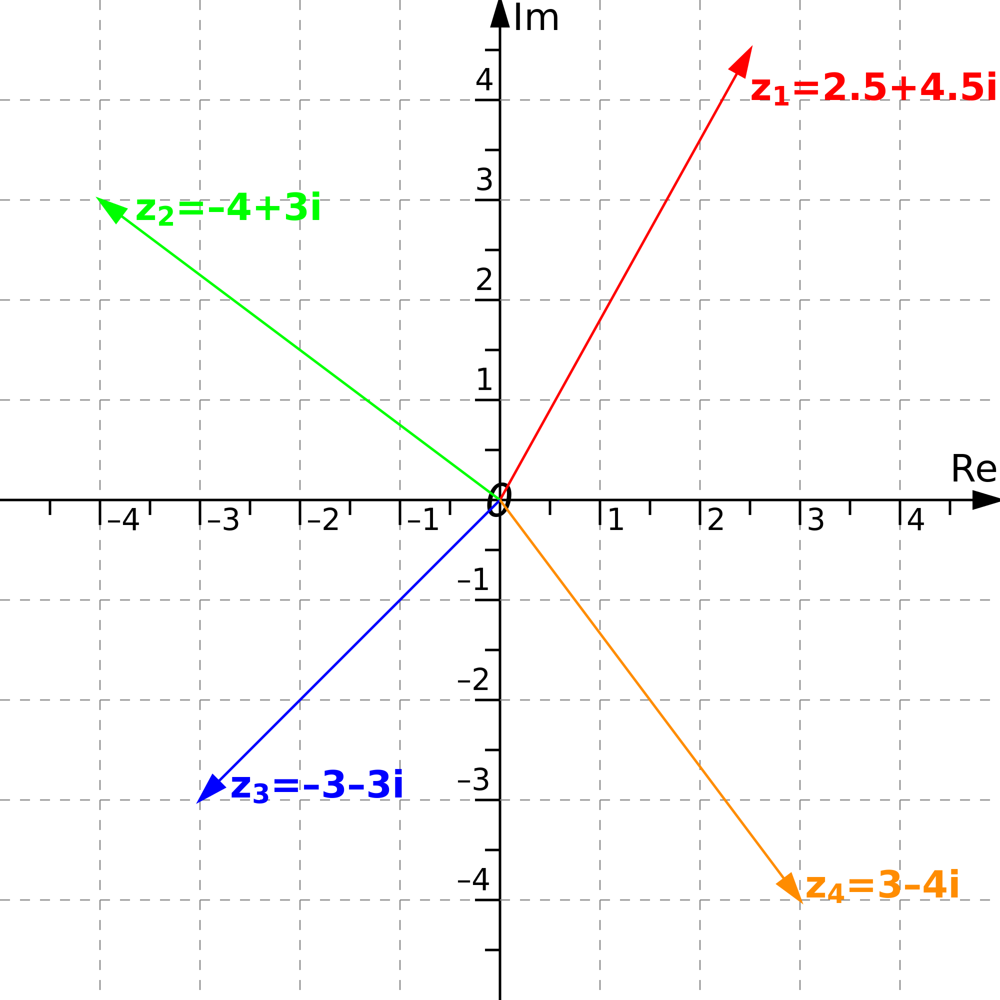

This is my rendering of the Mandelbrot fractal. If you're new to the Mandelbrot fractal, this
Numberphile video does a great job explaining it. I will try, too.
<<<<<<< HEAD
We start with a simple formula:
=======
We start with a this formula:
>>>>>>> master
f(z) = z
2 + c
This equation is the heart of the Mandelbrot fractal. It is a recurrent equation, meaning once you've calculated
f(z), you plug that right back in as an input and run the equation again. And again. And again.
We are interested in what happens to
f(z) after many iterations. Does it get very big or does it hover around some value? In technical words, does it diverge or does it stay bounded? The answer to this question will depend on what values for z and c we choose.
Let's look at an example, where our constant is 1. (The constant can be a complex number, but we'll keep it simple for now.) What do we choose for z? Well, other fractals use different values, but for the Mandelbrot set, we always initialize with 0. So armed with c = 1 and z =0:
f(0) = 0
2 + 1
= 1
Now we do it again. Our constant remains 1. But for each step now, our new z comes from the output of the previous step.
f(1) = 1
2 + 2
= 3
f(3) = 3
2 + 2
= 11
f(11)= 11
2 + 2
= 123
What is happening to
f(z)? We are only concerned with two possibilities: Does it diverge to infinity, or does it stay bounded, eat, shop and live local? Following our results: 1, 1, 3, 11, 123 ... well, yes,
f(z) diverges when c = 1. The Mandelbrot set is the set of all numbers who DON'T cause this equation to diverge. 1, therefore, is not in the Mandelbrot set. We could check other values and find that they stay bounded. -1, for example, stays near home as does i/2. You can try it yourself, or take my word for it.
<<<<<<< HEAD
Where does the cool fractal part come from? It is a graph of these results. Imagine a complex plane with a horizontal real value axis and a vertical imaginary value axis:

To produce the Mandelbrot fractal, do as follows: Try each point on the complex plane as the constant 'c' in our Mandelbrot equation =>
f(z) = z
2 + c. If you iterate and find that the result diverges with a certain 'c' value, then that 'c' is not in the set. On the other hand if the results stay 'bounded', then the point is in the set. Color these two groups of points two different colors. Amazingly, this very simple procedure gives rise to the beautiful Mandelbrot fractal.
But this doesn't account for all the colors. What's with the colors? They certainly help to make the fractal look cool and trippy. But there is mathematical justification to the psychedelic addition. Consider investigating each point and checking whether it is bounded. At what point do you give up? We have the concept called 'bailout' - it tells us how many times to iterate the function before stopping. The rule is: Iterate the equation. If at any point you produce an
f(z) that is more than 2 units away from 0, then that 'c' value is a goner. However, if you iterate up to the bailout number and you haven't escaped, consider the point bounded.
Now, instead of coloring all the points black and white, keep track of how long it took each point to diverge. The points that never diverge are (probably) in the Mandelbrot set. We color them black. For the points that do diverge, we can have fun, and color them any arbitrary color scheme, say blue for quick escapes and yellow for slow-pokes.
My color scheme is generated by passing divergence times into trig functions. Since trig functions repeat, this has the advantage of producing interesting colors as you 'dive deep'. To optimise speed, I decided not to use any libraries. This is why I have no D3 color schemes (as beautiful as they are). Similarly, I did not want to depend on a math library for complex numbers, so I disect the operation of squaring a complex number into real number algebra.
=======
Where does the cool fractal part come from? We'll need to dive into complex numbers. It is a graph of these results. Imagine a complex plane with a horizontal real value axis and a vertical imaginary value axis:
To produce the Mandelbrot fractal, do as follows: Try each point on the complex plane as the constant 'c' in our Mandelbrot equation
f(z) = z
2 + c. If you iterate and find that the result diverges for a certain 'c' value, then that 'c' is not in the set. On the other hand, if the results stay 'bounded' then the point is in the set. Now color these two groups of points two different colors. Amazingly, this very simple procedure gives rise to the beautiful Mandelbrot fractal.
But this doesn't account for all the colors. What's with the colors? They certainly help to make the fractal look cool and trippy. But there is mathematical justification to the psychedelic addition. Consider investigating each point and checking whether it is bounded. At what point do you give up? We have the concept called 'bailout' - it tells us how many times to iterate the function before stopping. The rule is: Iterate the equation. If at any point you produce an
f(z) that is more than 2 units away from 0, then that 'c' value is a goner. However, if you iterate up to the bailout number and you haven't escaped, consider the point bounded.
Now, instead of coloring all the points two colors, keep track of how long it takes each point to diverge. The points that never diverge are (probably) in the Mandelbrot set. We color them black. For the points that do diverge, we can have fun and color them any arbitrary color scheme, say blue for quick escapes and yellow for slow-pokes.
My color scheme is generated by passing divergence times into trig functions. Since trig functions repeat, this has the advantage of producing interesting colors no matter how far you 'dive deep'. To optimize speed, I decided not to use any libraries. This is why I have no D3 color schemes (as beautiful as they are). Similarly, I did not want to depend on a math library for complex numbers, so I disected the operation of squaring a complex number into basic algebra using real numbers.
>>>>>>> master
Your math enthusiast,
Ben